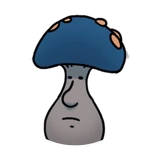

|
Cornifer |
Um dos personagens mais importantes para o jogo, que vende o mapa para o jogador. |
|
Elderbug |
É o primeiro personagem do jogo, o qual introduz o jogador à cidade inicial. |
 |
Godseeker |
Permite acesso a dimensão dos sonhos dos deuses, onde o jogador pode conseguir um final secreto. |
|
Grimm |
Personagem principal da DLC dos pesadelos, ajuda o jogador a conseguir um talismã e após isso, vira um dos chefes mais difíceis do jogo. |
|
Grubfather |
Dá ao jogador recompensas por achar as larvas escondidas pelo mapa, variando de dinheiro à itens raros. |
|
Hornet |
É a personagem mais importante do jogo, primeiramente guia o jogador pelo começo do jogo, e no final dá a ele uma marca necessária para liberar o final, além de acompanhá-lo pela jornada inteira. |
 |
Jiji |
Quando o jogador está no modo normal, ajuda a recuperar o dinheiro perdido a morrer, e quando o jogador está no modo vida única, apenas dá dinheiro em troca de itens inúteis. |
|
White Lady |
Está em uma área extremamente escondida no canto do mapa e dá ao jogador metade da chave para um final. |
|  |
Mr. Mushroom |
É um personagem com uma missão longa e confusa que libera um final secreto ao ser concluída. |
|
Nailmaster Mato |
Primeiro dos 3 irmãos mestres nas artes do ferrão. Ensina ao jogador o ataque giratório. |
|
Nailmaster Oro |
Segundo dos 3 irmãos mestres nas artes do ferrão. Ensina ao jogador o ataque esquiva. |
 |
Nailmaster Sheo |
Último dos 3 irmãos mestres nas artes do ferrão. Ensina ao jogador o ataque carregado, uma das habilidades mais poderosas. |
|
Quirrel |
Possui grande impacto na história do jogo e também acompanha o jogador por uma grande parte da história. |
 |
Nailsmith |
É responsável por aprimorar o ferrão, a arma principal do jogador, a um custo. |